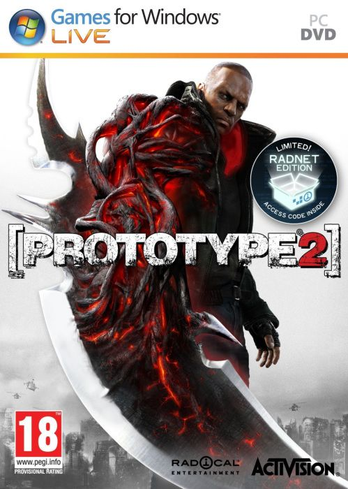

Prototype 2 (2012), 11.18GB
Género: Acción, Mundo abierto, Sandbox
Al igual que Alex Mercer, James Heller puede cambiar de forma y asumir la
identidad de otras personas y sus recuerdos. Para asegurarse de que los
enemigos no abrumen al jugador, Radical ha creado un sistema de esquivar y
nueva IA, más realista. Heller es capaz de utilizar las armas en el juego, como
la extracción de los cañones fuera de un tanque y usarlo contra los enemigos.